Fake Newspaper Ad Library
Fake vintage newspaper ad series inspired by real advertisements from The Gateway to Oklahoma History, a newspaper digitization project I worked on in Grad school.
21 ads in the library

Slot-machine newspaper ad — toss coin to witcher.
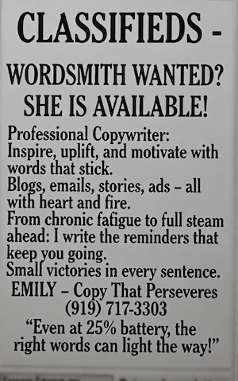
Open-to-work style newspaper ad for ad & copy specialist.
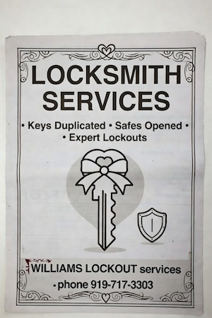
Fake vintage service ad from the BCE visual series.
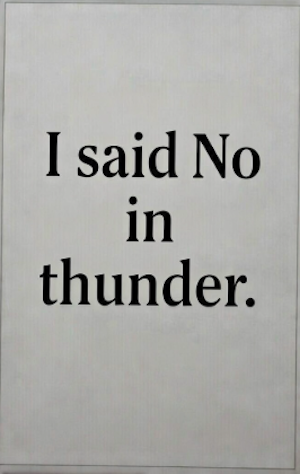
Typography ad riff from the BCE fake-ad set.
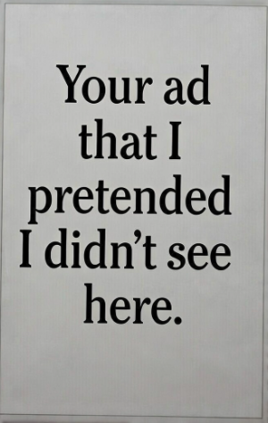
“Your ad that I pretended I didn’t see here.”
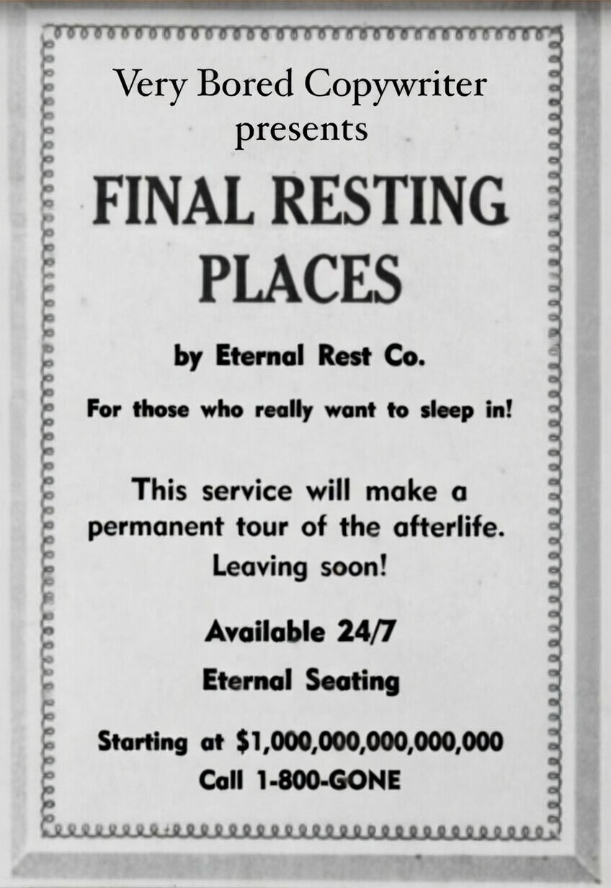
Dark humor newspaper ad visual.
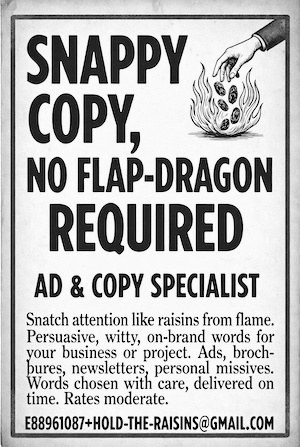
Snappy copy / ad & copy specialist classified.
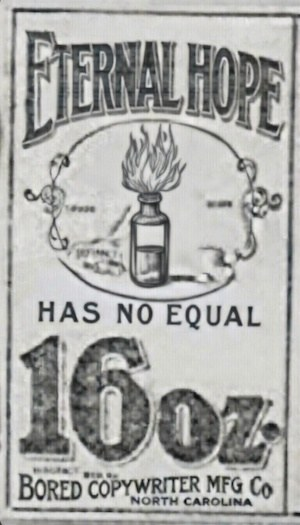
Vintage tonic-bottle ad — Eternal Hope Has No Equal.
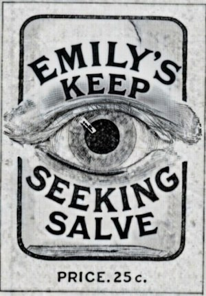
Keep Seeking Salve — eye illustration ad.
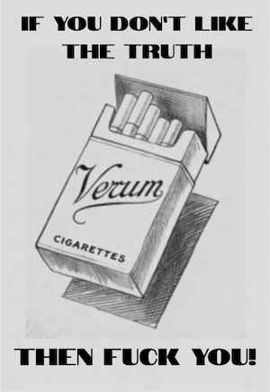
“If you don’t like the truth…” fake cigarette ad.
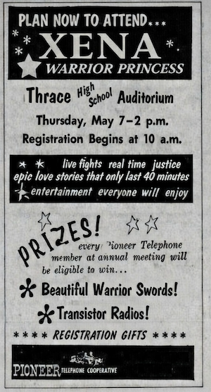
Fake vintage newspaper ad for a Xena event.
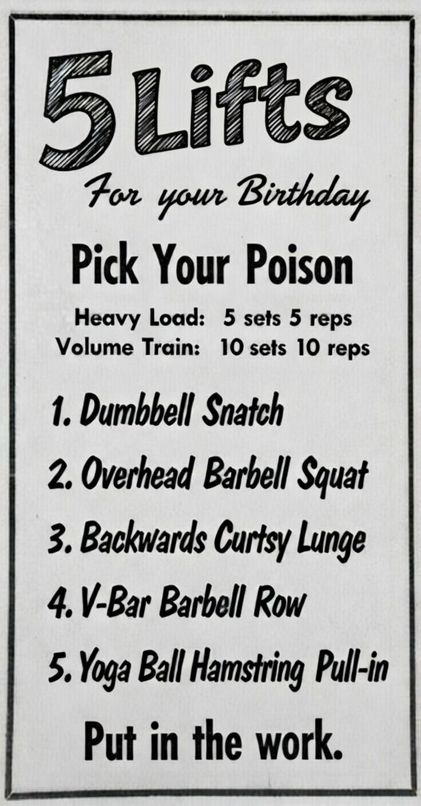
Retro workout card ad.
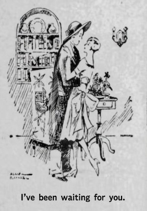
Vintage couple line drawing — “I’ve been waiting for you.”
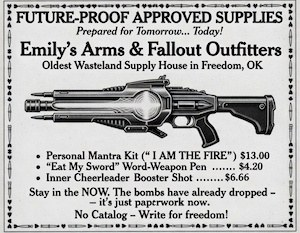
Wasteland supply-house fake ad.
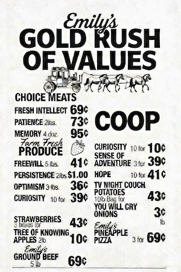
Mock grocery price list ad.
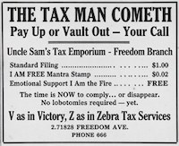
Uncle Sam's Tax Emporium — Freedom Branch.
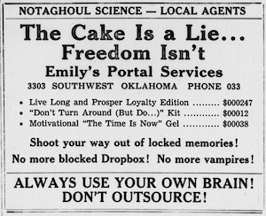
“Always use your own brain! Don’t outsource!”
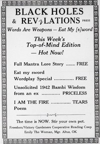
Fake press ad listing edition contents.
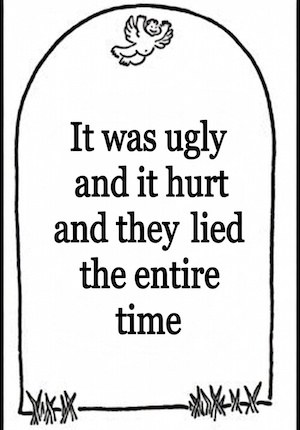
“It was ugly and it hurt and they lied the entire time.”
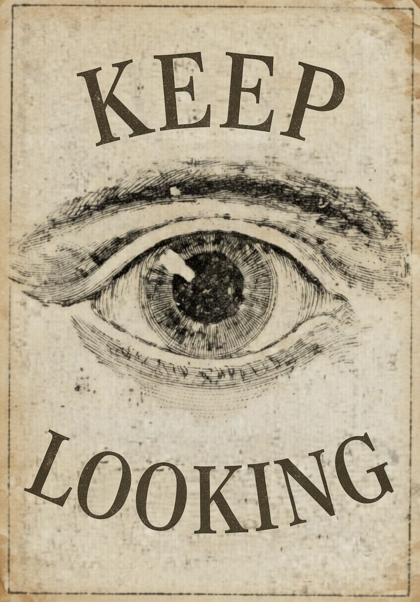
Fake newspaper ad visual.
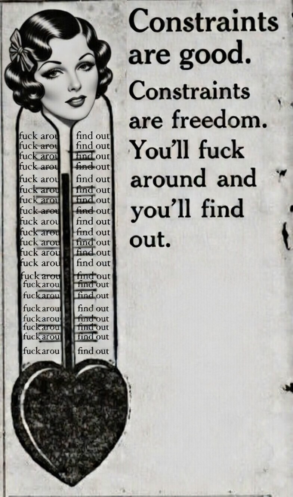
Additional Grok newspaper ad from the series.